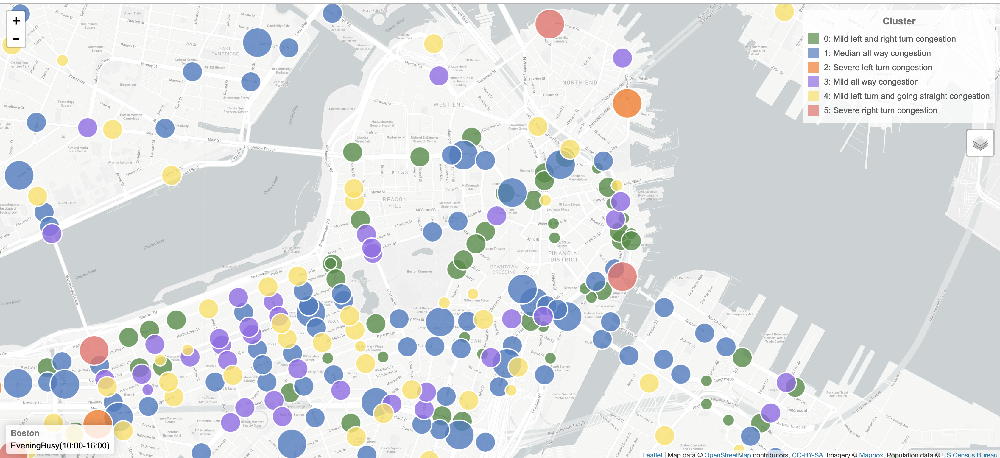
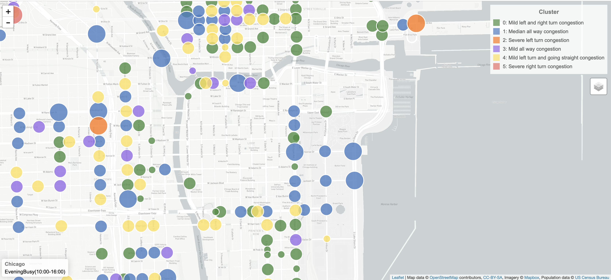

Intersections Patterns Interactive Map
Atlanta Intersection Pattern Map Example
Intersection Patterns in Atlanta

Weekdays in Atlanta
Evening Busy(16:00-20:00) Midnight(22:00-07:00) MorningBusy(07:00-10:00) NormalDay(10:00-16:00) NormalNight(20:00-22:00)Weekends in Atlanta
Evening Busy(16:00-20:00) Midnight(22:00-07:00) MorningBusy(07:00-10:00) NormalDay(10:00-16:00) NormalNight(20:00-22:00)Intersection Patterns in Boston
Weekdays in Boston
Evening Busy(16:00-20:00) Midnight(22:00-07:00) MorningBusy(07:00-10:00) NormalDay(10:00-16:00) NormalNight(20:00-22:00)Weekends in Boston
Evening Busy(16:00-20:00) Midnight(22:00-07:00) MorningBusy(07:00-10:00) NormalDay(10:00-16:00) NormalNight(20:00-22:00)Intersection Patterns in Chicago
Weekdays in Chicago
Evening Busy(16:00-20:00) Midnight(22:00-07:00) MorningBusy(07:00-10:00) NormalDay(10:00-16:00) NormalNight(20:00-22:00)Weekends in Chicago
Evening Busy(16:00-20:00) Midnight(22:00-07:00) MorningBusy(07:00-10:00) NormalDay(10:00-16:00) NormalNight(20:00-22:00)Intersection Patterns in Philadelphia